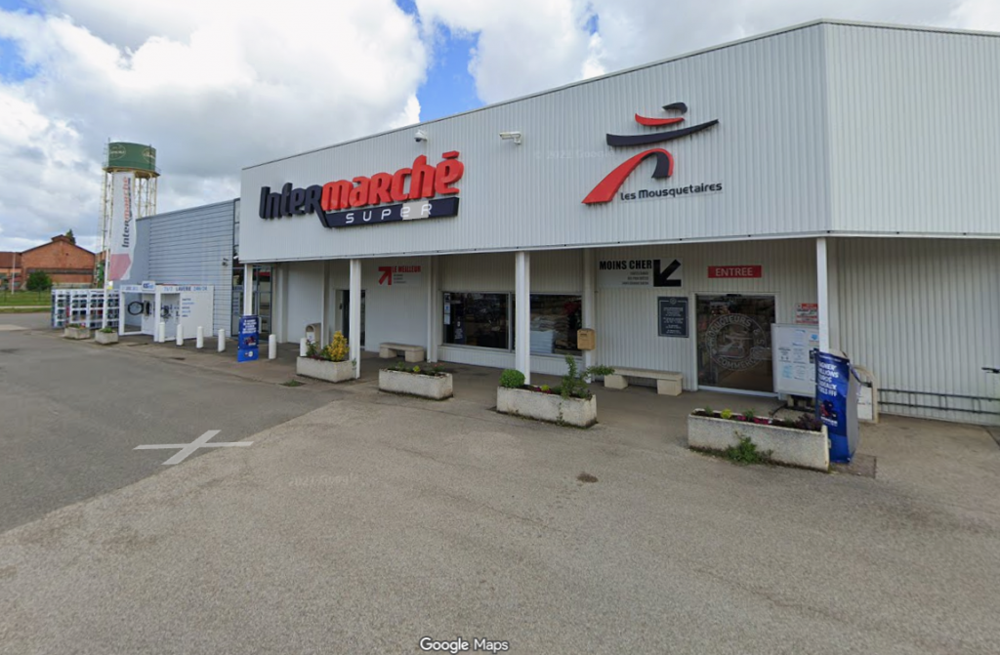
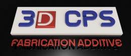
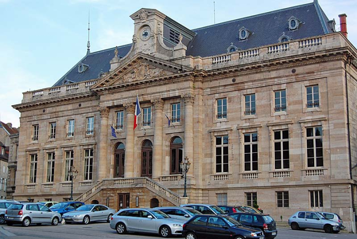
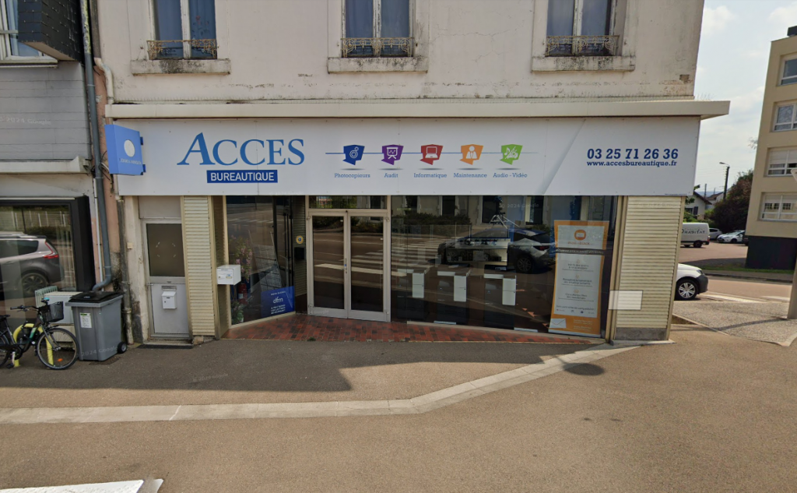
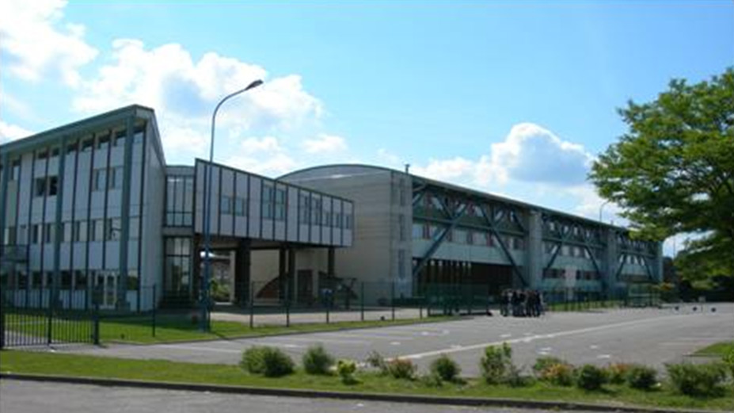
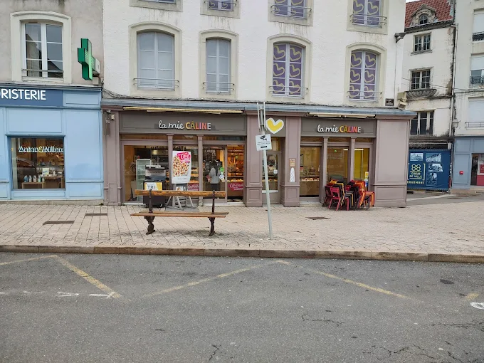
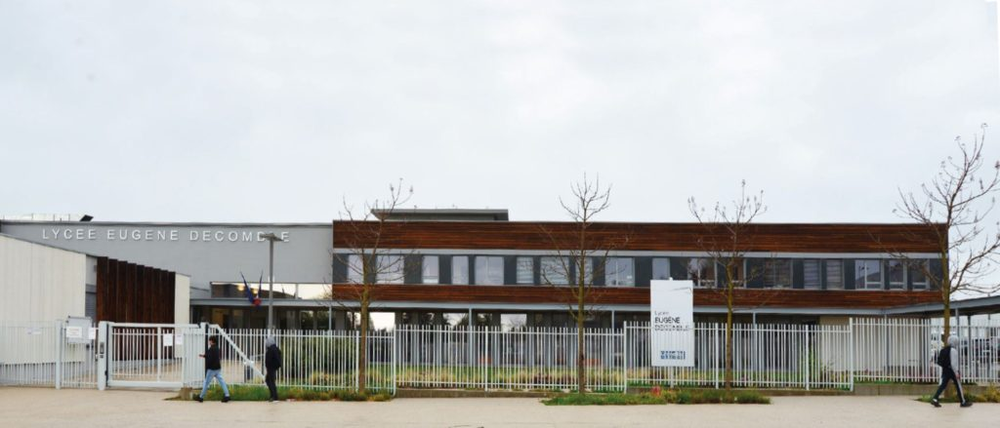

🛒 Découverte 3ème — 2020 · 1 semaine
Intermarché

Stage de découverte de 3ème au sein du supermarché Intermarché.
📋 Missions
- S'occuper de la mise en rayon et du rangement des produits
- Accueillir les clients et les aider dans le magasin
🎯 Compétences acquises
- Être plus à l'aise pour parler avec les gens et les conseiller
- Découvrir comment fonctionne une entreprise et le monde du travail
🖨️ Stage — 2022 · 2 semaines
3D CPS — Stage de conception 3D

Stage de conception et impression 3D sur logiciel professionnel.
📋 Missions
- Concevoir et réaliser des pièces sur mesure
- Créer ses propres objets originaux sur un logiciel professionnel
🎯 Compétences acquises
- Savoir utiliser les bases d'un logiciel de conception (Fusion)
- Connaître les premiers pas de l'impression 3D (charger le fil, lancer l'impression)
🖥️ Stage — 2022 · 2 semaines
C'SAM — Agglomération de Chaumont

Service informatique de l'agglomération de Chaumont — support et dépannage utilisateurs.
📋 Missions
- Assister les utilisateurs dans le diagnostic et la résolution de leurs problèmes informatiques
- Réaliser des dépannages de premier niveau sur les postes de travail (logiciel et matériel)
- S'immerger dans le quotidien d'un service de maintenance pour comprendre le fonctionnement global d'un parc informatique
🎯 Compétences acquises
- Savoir interroger un utilisateur pour identifier l'origine d'une panne (sens de l'écoute)
- Apprendre les bases du dépannage et de l'investigation système
- Capacité à s'adapter à un environnement professionnel structuré
🏛️ Stage — 2022 · 2 semaines
Mairie de Langres — Service Informatique

Stage au sein du service informatique municipal — installation et administration réseau.
📋 Missions
- Installer et configurer des postes de travail sur différents sites (bureaux, écoles)
- Accompagner les techniciens lors d'interventions techniques sur le terrain et aider au diagnostic auprès des utilisateurs
- Découvrir l'administration globale d'un parc : serveurs, sécurité réseau (pare-feu, switches) et téléphonie
🎯 Compétences acquises
- Identifier les composants internes d'un ordinateur
- Savoir recueillir les informations nécessaires auprès de l'utilisateur pour comprendre une panne
- Préparer et installer du matériel informatique adapté aux besoins spécifiques d'un service
🏫 Stage — 2023 · 4 semaines
ACCES X DFM

Maintenance informatique itinérante dans plusieurs collèges de la région.
📋 Missions
- S'occuper de la maintenance informatique dans plusieurs collèges différents
- Réparer les pannes et installer de nouveaux équipements informatiques (déploiement)
- Rester disponible sur place pour aider le personnel et les professeurs si un problème survient
🎯 Compétences acquises
- Savoir organiser ses interventions en suivant une liste de tâches
- Réaliser des dépannages de base et l'installation de matériel informatique
- S'adapter rapidement à différents lieux de travail
🏫 Stage — 2023 · 4 semaines
Lycée Charles de Gaulle

Service informatique du lycée — maintenance du parc et support aux professeurs.
📋 Missions
- Assurer le bon fonctionnement du matériel informatique au sein du lycée
- Installer et configurer de nouveaux postes de travail
- Échanger avec les professeurs pour identifier leurs problèmes techniques et y répondre
🎯 Compétences acquises
- Savoir diagnostiquer et résoudre des pannes informatiques courantes
- Mettre en service du matériel informatique prêt à l'emploi
- Comprendre et analyser les besoins d'un utilisateur pour lui apporter une solution
🏛️ Stage — 2023 · 4 semaines
Mairie de Langres — Service Informatique
Maintenance multi-sites et exploration des outils de supervision réseau.
📋 Missions
- Réaliser des interventions de maintenance et de dépannage sur les différents sites de la mairie
- Faire des recherches sur les outils de surveillance (supervision) du parc informatique
- Installer et explorer un logiciel de surveillance pour découvrir son fonctionnement et ses menus
🎯 Compétences acquises
- Savoir chercher des informations sur un nouveau type de logiciel
- Comprendre à quoi sert la surveillance d'un réseau informatique
- Apprendre à se repérer dans une interface technique inconnue
🏛️ Stage BTS — 2024 · 4 semaines
Mairie de Langres — Service Informatique
Migration du système de ticketing GLPI 9 vers GLPI 10 avec rédaction de procédure.
📋 Missions
- Mettre à jour le service de ticketing (passage de GLPI 9 vers GLPI 10)
- Rédiger une procédure technique d'installation précise et reproductible
- Adapter le logiciel aux besoins de la mairie
🎯 Compétences acquises
- Piloter un projet de migration logicielle de A à Z
- Produire une documentation technique fiable pour sécuriser l'installation
- Configurer un outil de gestion de parc et ses interconnexions réseau
🥐 Expérience pro — 2025 · 4 semaines
La Mie Câline, Chaumont

Vendeur préparateur (3 CDD) — Juillet (2 sem.), Août (1 sem.) et Octobre (1 sem.) 2025.
📋 Missions
- Accueillir les clients, les conseiller, réaliser la vente et proposer les nouveautés
- Gérer l'encaissement
- Préparer les commandes et nettoyer son poste de travail
🎯 Compétences acquises
- Mieux communiquer avec les clients et être plus à l'aise pour parler
- Apprendre à travailler en équipe
- Être ponctuel et respecter les horaires de travail
- Savoir organiser son travail et gérer les priorités
🖥️ Stage BTS — 2025 · 5 semaines
Lycée Eugène De Comble

Stage BTS axé sur la virtualisation avec Proxmox, la conteneurisation Docker et les bases de la cybersécurité.
📋 Missions
- Installer et configurer un hyperviseur Proxmox pour gérer des machines virtuelles
- Apprendre à utiliser Docker pour installer et mettre en service différents outils informatiques
- S'initier aux bases de la cybersécurité (brute force, injection SQL) : comprendre comment on attaque un système pour savoir comment le protéger
🎯 Compétences acquises
- Développer une méthode de travail rigoureuse : analyser avant d'agir et ne pas se précipiter
- Faire preuve d'autonomie : chercher les solutions par soi-même pour atteindre l'objectif fixé
- Maîtriser les outils de virtualisation et de conteneurisation (Proxmox et Docker)
🏫 Stage BTS — 2026 · 5 semaines
Lycée Charles de Gaulle
Stage BTS axé sur la migration du parc informatique vers Windows 11 et la maintenance réseau.
📋 Missions
- Migration du parc informatique vers Windows 11 (avec recours à Flyby11 en cas de blocage matériel)
- Dépannage réseau et maintenance du matériel
- Initiation à l'environnement macOS
🎯 Compétences acquises
- Prendre conscience de l'importance de maintenir un système à jour pour garantir sa sécurité
- Être opérationnel et autonome immédiatement dans un environnement connu
- S'adapter à différents types de systèmes (Windows et Mac)